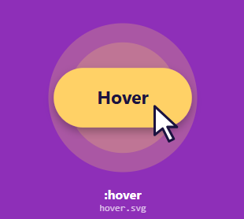
:hover
Selecciona un elemento cuando el usuario pasa el cursor sobre él.
Las pseudoclases se utilizan para hacer referencia a elementos HTML que tienen un comportamiento concreto. Volvamos a recordar el esquema general de sintaxis de CSS, al que ahora añadiremos las pseudoclases. Se definen escribiendo dos puntos antes del nombre de la pseudoclase, de la siguiente forma:
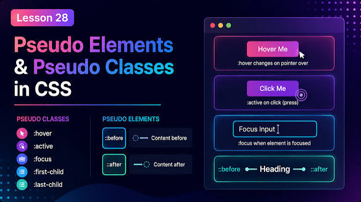

Selecciona un elemento cuando el usuario pasa el cursor sobre él.
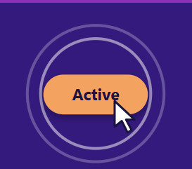
Selecciona un elemento mientras el usuario lo está activando, por ejemplo, al hacer clic en un enlace.
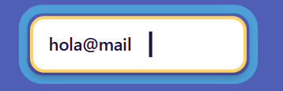
Selecciona el elemento que tiene el foco, como un campo de formulario seleccionado con el teclado.
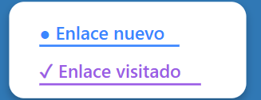
Selecciona los enlaces que el usuario ya visitó.
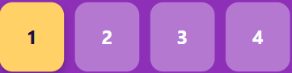
Selecciona un elemento cuando es el primer hijo de su elemento padre.
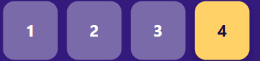
Selecciona un elemento cuando es el último hijo de su elemento padre.
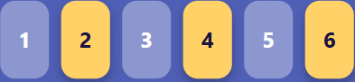
Selecciona un elemento según su posición entre los hijos; permite usar números o patrones como even y odd.
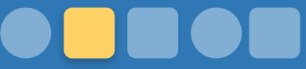
Selecciona el primer elemento de ese tipo entre sus hermanos.
Selecciona el último elemento de ese tipo entre sus hermanos.
Selecciona los elementos que no coinciden con el selector indicado.
Selecciona casillas de verificación u opciones que están marcadas.
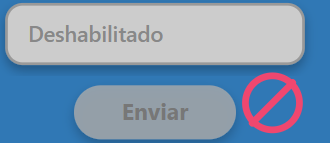
Selecciona los controles de formulario que están deshabilitados.
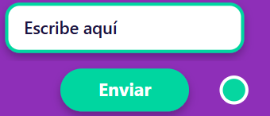
Selecciona los controles de formulario que están habilitados.
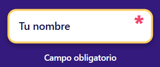
Selecciona los campos de formulario que deben completarse antes de enviar.
Selecciona un campo cuyo valor cumple las reglas de validación.
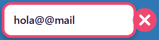
Selecciona un campo cuyo valor no cumple las reglas de validación.
Selecciona un elemento que no tiene hijos ni contenido de texto.
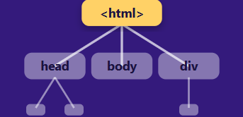
Selecciona el elemento raíz del documento; en HTML, normalmente es <html>.